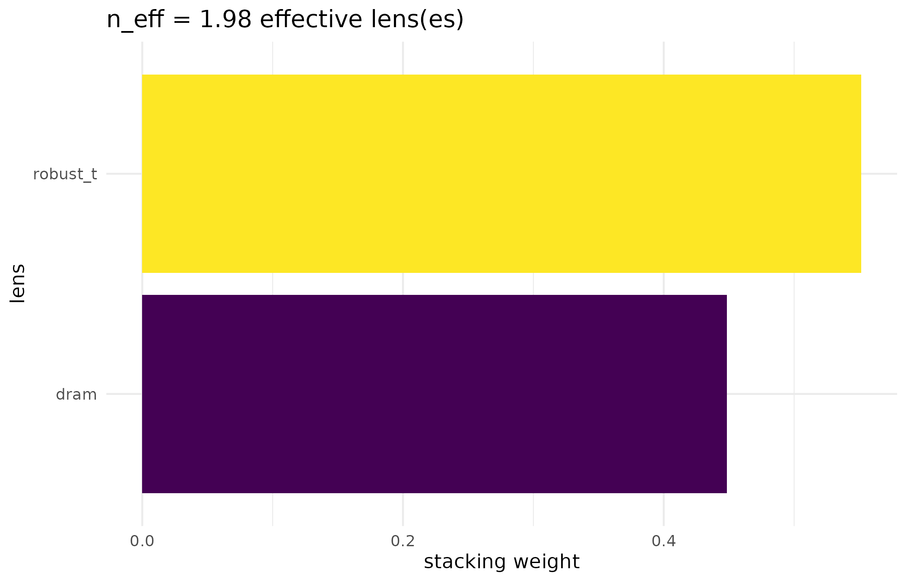
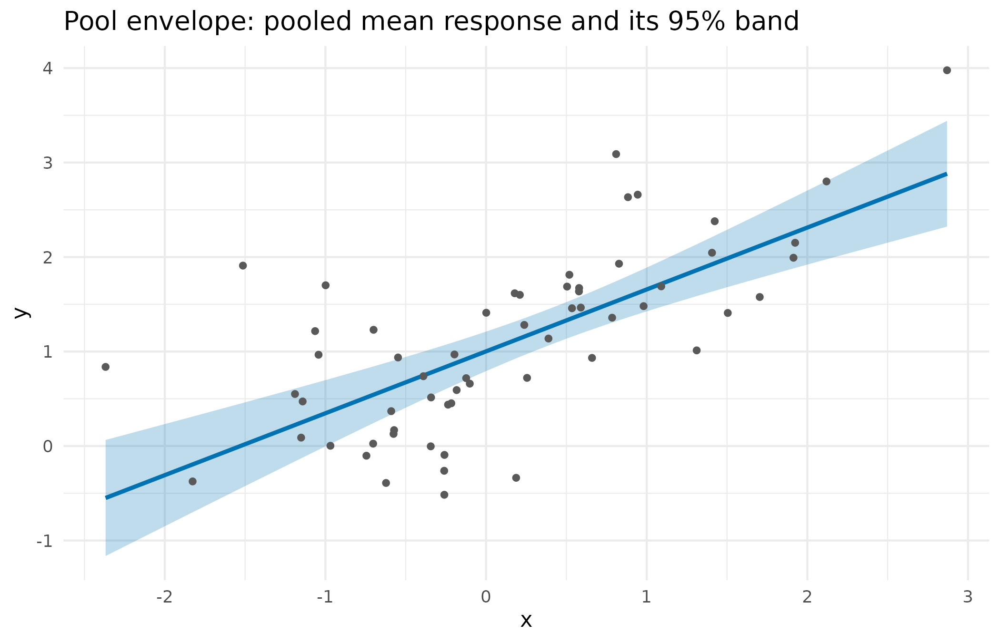

Why
An analyst has just fitted a mixed model – a random intercept for the blocks in a trial, or two crossed intercepts for variety and trial in a multi-environment trial (MET) – and wants an independent second opinion: not another run of the same sampler on the same posterior, but an opinion built from inference methods and model-structure variants that are genuinely different from whatever produced the first fit. Does a heavy-tailed alternative agree with a Gaussian fit? Does a closed-form treatment of the random effects agree with what a sampler-based fit reported? koine answers by stacking over a curated battery of inference lenses in predictive space and returning one synthesised opinion, or by abstaining outright – declining to guess – when the battery cannot offer enough independent perspectives to say anything. This vignette walks the full spine an analyst would use to get that opinion: the request, the battery that resolves against it, a single lens, the diversity that makes a synthesis worth having, and the two mixed-model shapes koine supports – a single random intercept and a multi-environment trial’s two crossed intercepts – ending with what koine does when it should not answer at all.
What
A koine_pass() is an engine-neutral, declarative
request: it carries the formula, the data, an evaluable family, the
canonical observation axis, and a content hash, and it is the one object
every lens and every synthesis call reads.
resolve_battery() enrols only the lenses whose family,
feature support and tier fit that request, and records why every other
lens was excluded, so absence is always explained rather than silent. A
lens’s own fit_*() function – fit_dram(),
fit_robust_t(), fit_glmm_marginal(), and
others in the registry – takes a pass and returns draws, or a typed
abstention if the lens cannot field the model. synthesise()
is the front door: it resolves the battery, fits every opinion lens,
gates on PSIS reliability, and stacks the survivors into one predictive
opinion, reporting the stacking weights, the effective number of
distinct components, and an over-dispersed envelope that reflects
between-lens disagreement as well as within-lens uncertainty.
abstention() and is_abstention() make a
decline a typed, first-class value rather than an error or a silently
wrong number.
Do
The request: a pass
set.seed(42)
n_pop <- 40L
x_pop <- rnorm(n_pop)
d_pop <- data.frame(
y = 1.5 + 0.8 * x_pop + rnorm(n_pop, sd = 0.7), x = x_pop
)
pass <- koine_pass(y ~ x, data = d_pop, family = gaussian())
pass
#> <koine pass>
#> formula : y ~ x
#> family : gaussian / identity
#> N : 40
#> outputs : posterior, log_likelihood
#> ir_hash : c708f46cca12...The family is wrapped into an evaluable
family_spec: koine computes the pointwise log-likelihood
itself, because the upstream family object exposes a mean function but
no log-likelihood.
fs <- as_family_spec(gaussian())
fs$loglik_pointwise(y = c(0, 1), eta = c(0, 1), aux = list(sigma = 1))
#> [1] -0.9189385 -0.9189385The battery
resolved <- resolve_battery(pass)
vapply(resolved$enrolled, function(lens) lens$id, character(1))
#> [1] "dram" "nimble_gibbs" "dream_zs" "robust_t" "horseshoe"
#> [6] "lasso" "ridge"| Lens | Reason excluded |
|---|---|
| pg_gibbs | family ‘gaussian’ unsupported by lens |
| glmm_marginal | feature_unsupported: lens requires a random-effects term |
| nimble_glmm | feature_unsupported: lens requires a random-effects term |
| robust_re_t3 | feature_unsupported: lens requires a random-effects term |
| robust_re_t8 | feature_unsupported: lens requires a random-effects term |
Seven lenses resolve for this Gaussian population model: DRAM, NIMBLE-Gibbs and DREAM (different inference families on the same posterior), plus the model-structure variants – robust-t and a shrinkage spectrum (ridge, lasso, horseshoe). The table shows why every other registered lens was left out; the Polya-Gamma Gibbs lens, for instance, is excluded on family grounds because it serves binomial logistic models, not Gaussian ones, while the random-effects lenses are excluded because this particular pass has no grouping term for them to honour.
One lens: delayed-rejection adaptive Metropolis
fit_pop <- fit_dram(pass, n_iter = 1500L, n_burn = 750L, n_chains = 2L)
fit_pop
#> <koine fb_fit>
#> status : contributed
#> method : dram exactness: exact
#> family/kernel: random_walk / dram
#> draws : 750 x 2 x 3 (chain x draw x var)
#> log_lik : NULL (unassembled)
#> maturity : koine-implemented-validated| variable | mean | sd |
|---|---|---|
| b_(Intercept) | 1.565 | 0.102 |
| b_x | 0.792 | 0.086 |
| sigma | 0.666 | 0.081 |
Diversity: a heavy-tailed structure variant
koine’s value as a second opinion comes from diversity. Lenses that fit the same model structure only corroborate one another – a useful consistency check, but the stacking weights then collapse onto a single component. Genuine diversity needs a different model structure. The robust-t lens supplies one: a Student-t likelihood whose heavy tails give a materially different predictive when the data depart from Gaussianity. The battery below is restricted to two lenses – DRAM and robust-t – on a synthetic, moderately heavy-tailed toy, so the comparison is exactly this one contrast rather than the full seven-lens battery above.
Engines available on this build
Two later sections need an optional package each: the two figures
below need ggplot2, and the MET corroboration check needs
lme4. Each guarded chunk checks for its own package and
prints one sentence in its place when the package is absent, so the
vignette still renders, with less to read, on a build that carries
neither.
has_ggplot2 <- requireNamespace("ggplot2", quietly = TRUE)
has_lme4 <- requireNamespace("lme4", quietly = TRUE)
set.seed(19)
n_ht <- 60L
x_ht <- rnorm(n_ht)
y_ht <- 1 + 0.8 * x_ht + rt(n_ht, df = 5) * 0.6 # moderately heavy-tailed
pass_ht <- koine_pass(y_ht ~ x_ht, data.frame(y_ht = y_ht, x_ht = x_ht),
gaussian())
reg <- koine_stage1_registry()
lens_id <- function(id) which(vapply(reg, function(z) z$id, "") == id)
reg_ht <- list(reg[[lens_id("dram")]], reg[[lens_id("robust_t")]])
reg_ht[[1]]$fit_fn <- function(p, ls) fit_dram(p, ls, 1500L, 750L, 2L)
reg_ht[[2]]$fit_fn <- function(p, ls) {
fit_robust_t(p, ls, nu = 4, n_iter = 1500L, n_burn = 750L, n_chains = 2L)
}
res_ht <- synthesise(pass_ht, registry = reg_ht)
res_ht
#> <koine result --- synthesised fourth opinion>
#> components: 2
#> weights :
#> dram 0.449
#> robust_t 0.551
#> elpd (stacked LOO): -65.83
#> PSIS k threshold : 0.685
#> diversity : 1.98 effective lens(es)
#> pool envelope : 2 lenses, 0 disagreeing on >=1 obs (95%, 2x inflated)
#> evidence axis : 1 lens(es), log-ml [prior-conditional]| Lens | Sampler family | Kernel |
|---|---|---|
| dram | random_walk | dram |
| robust_t | random_walk | robust-t-dram |
Figure: the stacking weights
weight_df <- data.frame(
lens = names(w_ht), weight = as.numeric(w_ht), stringsAsFactors = FALSE
)
ggplot2::ggplot(
weight_df, ggplot2::aes(x = stats::reorder(lens, weight), y = weight,
fill = lens)
) +
ggplot2::geom_col() +
ggplot2::coord_flip() +
ggplot2::scale_fill_viridis_d(guide = "none") +
ggplot2::labs(
x = "lens", y = "stacking weight",
title = sprintf("n_eff = %.2f effective lens(es)", n_eff_ht)
) +
ggplot2::theme_minimal()
Stacking weights for the two-lens heavy-tailed battery, with the effective-component count n_eff annotated. Neither lens is at zero, so the mixture is a genuine blend, not a corroboration collapse onto one structure.
Figure: the pooled predictive envelope
ord_ht <- order(x_ht)
points_df <- data.frame(x = x_ht[ord_ht], y = y_ht[ord_ht])
band_df <- data.frame(
x = x_ht[ord_ht], lower = lpe_ht$lower[ord_ht], upper = lpe_ht$upper[ord_ht],
pool_mean = lpe_ht$pool_mean[ord_ht]
)
ggplot2::ggplot() +
ggplot2::geom_ribbon(
data = band_df, ggplot2::aes(x = x, ymin = lower, ymax = upper),
fill = "#0072B2", alpha = 0.25
) +
ggplot2::geom_line(
data = band_df, ggplot2::aes(x = x, y = pool_mean), colour = "#0072B2",
linewidth = 1
) +
ggplot2::geom_point(
data = points_df, ggplot2::aes(x = x, y = y), colour = "grey35", size = 1.2
) +
ggplot2::labs(
x = "x", y = "y",
title = "Pool envelope: pooled mean response and its 95% band"
) +
ggplot2::theme_minimal()
The over-dispersed linear-pool envelope for the heavy-tailed battery: the pooled posterior-mean response (line) and its 95% envelope (band), built from the two lenses’ means and their between-lens disagreement, against the fitted x range.
Mixed models: a random intercept
koine also handles a single random intercept, (1 | g).
The opinion is built on an axis orthogonal to the sealed engines:
NIMBLE-Gibbs (fit_nimble_glmm()) samples the
random effects, while the marginal lens
(fit_glmm_marginal(), shown here because it needs no extra
toolchain) integrates them out – exactly for the Gaussian LMM,
by adaptive Gauss-Hermite quadrature for the binomial GLMM. Both report
(beta, sigma, tau) and are stacked on the same
per-observation integrated predictive (the random effect
marginalised under each draw’s variance components), which keeps the
leave-one-out gate reliable. (Poisson is enrolled alongside Gaussian and
binomial, on a funnel-safe blocked-slice kernel; a post-fit convergence
gate makes the lens abstain rather than contribute where the variance
component is too weakly identified to mix.)
set.seed(20)
n_re <- 60L
n_groups_re <- 10L
g_re <- factor(rep(seq_len(n_groups_re), each = n_re / n_groups_re))
x_re <- rnorm(n_re)
b_re <- rnorm(n_groups_re, 0, 1.1) # group random intercepts
y_re <- 1 + 0.5 * x_re + b_re[g_re] + rnorm(n_re, 0, 0.7)
pass_re <- koine_pass(
y_re ~ x_re + (1 | g_re), data.frame(y_re = y_re, x_re = x_re, g_re = g_re),
gaussian()
)
fit_re <- fit_glmm_marginal(pass_re, n_iter = 1500L, n_burn = 750L,
n_chains = 2L)| variable | mean |
|---|---|
| b_(Intercept) | 0.896 |
| b_x_re | 0.611 |
| sigma | 0.687 |
| tau | 1.336 |
A third lens, fit_glmm_robust_re(), gives the random
intercepts heavy (Student-t) tails. Where the two Gaussian-RE lenses
corroborate (their weights collapse), this structure variant earns real
stacking weight when group effects are outlying – so koine’s mixed-model
opinion, like its population battery, becomes sensitive to model
structure rather than a weighted echo of one assumption.
Multi-environment trials: variety and trial together
The breeder-standard multi-environment-trial (MET) model carries
two random intercepts – a variety effect and a trial
(environment) effect, crossed (each variety grown across many trials) or
nested. koine fits this structure directly with
(1 | variety) + (1 | trial), so it corroborates a
production MET model on the model that model actually fits, not on a
single-random-effect reduction that discards the trial structure. The
Gaussian MET marginal stays exact: the random effects are integrated out
analytically, through a dense Cholesky of the marginal covariance
where and are the (0/1) grouping indicator matrices for each random factor and , are their variance-component standard deviations – where the sealed engines instead sample (NIMBLE) or Laplace-approximate (INLA) them. This is the one fitted example in this vignette that needs two grouping factors rather than one: demonstrating that koine fits a crossed structure at all is the entire point of the section, so the two groupings stay, with every other dimension of the design shrunk instead.
set.seed(404)
n_variety <- 10L # varieties
n_trial <- 5L # trials (environments)
u_variety <- rnorm(n_variety, 0, 1.0) # variety effects
v_trial <- rnorm(n_trial, 0, 2.5) # trial effects (dominant)
rows_met <- vector("list", n_variety)
for (i in seq_len(n_variety)) {
trials_i <- sample(seq_len(n_trial), 3L) # incomplete, unbalanced
obs_i <- lapply(trials_i, function(t) {
data.frame(
variety = i, trial = t,
yield = 5 + u_variety[i] + v_trial[t] + rnorm(1L, 0, 0.6)
)
})
rows_met[[i]] <- do.call(rbind, obs_i)
} # ends i, over the varieties
met <- do.call(rbind, rows_met)
met$variety <- factor(met$variety)
met$trial <- factor(met$trial)
nrow(met)
#> [1] 30
pass_met <- koine_pass(
yield ~ 1 + (1 | variety) + (1 | trial), met, gaussian(), seed = 5L
)
pass_met # tagged [MET], crossed
#> <koine pass>
#> formula : yield ~ 1 + (1 | variety) + (1 | trial)
#> random : (1 | variety) + (1 | trial) [MET]
#> family : gaussian / identity
#> N : 30
#> outputs : posterior, log_likelihood
#> ir_hash : b84c3ccf9161...
fit_met <- fit_glmm_marginal(pass_met, n_iter = 1200L, n_burn = 600L,
n_chains = 2L)| variable | mean |
|---|---|
| b_(Intercept) | 3.484 |
| sigma | 0.373 |
| tau_variety | 1.185 |
| tau_trial | 1.798 |
The draws carry one tau_<grouping> per random
factor. The chunk below checks koine’s MET variety effects against a
production MET model (here lme4, fitted by REML), and
against a single-random-intercept reduction that confounds each variety
with the trials it happened to be grown in.
prod_fit <- lme4::lmer(
yield ~ 1 + (1 | variety) + (1 | trial), met, REML = TRUE
)
blup_prod <- lme4::ranef(prod_fit)$variety[, 1]
single_fit <- lme4::lmer(yield ~ 1 + (1 | variety), met, REML = TRUE)
blup_single <- lme4::ranef(single_fit)$variety[, 1]
# koine MET variety effects (GLS BLUP at the posterior-mean variance components)
mv_met <- stats::setNames(sm_met$mean, sm_met$variable)
design_met <- koine:::.pass_design(pass_met)
red_met <- koine:::.pass_re_design(pass_met)
taus_met <- c(mv_met["tau_variety"], mv_met["tau_trial"])
vmat_met <- koine:::.re_marginal_cov(
design_met$N, red_met$factors, taus_met, mv_met["sigma"]
)
b_names <- paste0("b_", colnames(design_met$X))
resid_met <- design_met$y - as.numeric(design_met$X %*% mv_met[b_names])
z_variety <- koine:::.re_indicator(
red_met$factors[[1L]]$group, red_met$factors[[1L]]$n_groups
)
u_koine <- as.numeric(
taus_met[1L]^2 * t(z_variety) %*% solve(vmat_met, resid_met)
)
cor_met <- cor(u_koine, blup_prod)
cor_single <- cor(blup_single, blup_prod)| comparison | correlation |
|---|---|
| koine MET vs production MET | 1.000 |
| single-RE vs production MET | 0.928 |
A non-Gaussian MET – whose dense crossed marginal has no exact quadrature – is declined outright rather than approximated:
counts_met <- transform(met, n = rpois(nrow(met), 4))
fit_glmm_marginal(
koine_pass(n ~ 1 + (1 | variety) + (1 | trial), counts_met, poisson())
)$reason
#> [1] "feature_unsupported"Richer structure is refused rather than fitted as the wrong model: a
random slope, or more than two grouping factors, makes koine abstain
feature_unsupported.
pass_bad <- koine_pass(
y_re ~ x_re + (x_re | g_re),
data.frame(y_re = y_re, x_re = x_re, g_re = g_re), gaussian()
)
synthesise(pass_bad)$reason
#> [1] "feature_unsupported"When koine abstains
Abstention is a first-class outcome, not an error. If fewer than two independent opinion lenses resolve – for instance with a single-lens battery – koine declines to guess and says why.
out_abstain <- synthesise(pass, registry = list(koine_stage1_registry()[[1]]))
is_abstention(out_abstain)
#> [1] TRUE
out_abstain
#> <koine abstention>
#> scope : synthesis
#> reason: no_diverse_battery
#> detail: only 1 opinion lens(es) resolved; >= 2 independent lenses needed.Read
The DRAM lens recovers the data-generating intercept and slope
closely: 1.57 against a true 1.5, and 0.79 against a true
0.8.
On the heavy-tailed toy, the two-lens battery does not collapse onto a single structure: DRAM carries 0.45 of the stacking weight and robust-t carries 0.55, giving 1.98 effective lens(es) – above the package’s degeneracy threshold of 1.5, so the diagnostic records genuine diversity rather than a corroboration collapse. The weights figure shows that split directly, and the envelope figure shows what it buys: a pooled band wide enough that, on this particular draw, 0 of the 60 points fall outside the 95% band even though the band is inflated for between-lens disagreement as well as within-lens uncertainty.
The single-random-intercept marginal lens recovers the
data-generating values in the same qualitative way: intercept 0.9 (true
1), slope 0.61 (true 0.5), residual SD 0.69
(true 0.7) and group SD 1.34 (true 1.1), on 60
observations in 10 groups – fewer groups than a production analysis
would carry, which is why the variance component is recovered only
qualitatively rather than to two decimal places.
On the multi-environment toy, koine’s MET marginal variety effects
correlate 1.0000 with the production (lme4) MET fit,
against 0.9280 for the single-random-intercept reduction that ignores
the trial structure. The gap between the two reproduces, at this much
smaller scale, the qualitative point the section makes: confounding a
variety with the trials it happened to be grown in costs real agreement
with the model that actually generated the data, even on an incomplete,
unbalanced design of only 30 records.
Every abstention in this vignette is grounded in the same registry
the battery table used above: the Poisson MET call, the random-slope
call, and the single-lens synthesise() call all decline
through the typed koine_abstention path
(is_abstention() returns TRUE for the last of
the three) rather than returning a silently wrong number.
Limits
The random-effects lenses carry a fixed weakly-informative prior –
N(0, 5) on every fixed-effect coefficient and
lognormal(0, 2) on every variance-component standard
deviation for the Gaussian and binomial families – and
koine_pass()’s prior argument, though present
in the signature, does not reach them: it is reserved for lenses that do
not yet exist. On a response measured in the tens or hundreds this
reference prior pulls the intercept toward zero and lets the group
standard deviation absorb the resulting offset, because the prior’s own
scale, not the data’s, starts to dominate the posterior. The examples in
this vignette are engineered on roughly unit scale for exactly this
reason: they are not a demonstration that the prior is harmless, only
that it is invisible when the design already matches its assumption. A
caller with a response in its raw, natural units – yield in kilograms
per hectare, a count in the hundreds, anything not already standardised
– should centre and scale the response and every non-intercept covariate
before building the pass, and map any recovered coefficients back to the
original scale afterwards; the random-intercept and MET marginal lenses
in this vignette would return a materially different, prior-dominated
opinion on the same data left in its natural units.
Every fitted example in this vignette uses at most 60 observations
and a few hundred to two thousand MCMC iterations over two chains,
chosen so the whole vignette renders in under two minutes rather than to
reflect the scale koine is meant to run at; the MET section is the one
exception, because demonstrating a crossed two-grouping structure at all
needs two grouping factors, so it shrinks every other dimension of the
design instead. The two-lens diversity split shown above is itself
sensitive to this small a sample: at n = 60, most seeds
tried while preparing this vignette gave a degenerate,
single-lens-dominated split rather than the genuine two-lens blend shown
here, whereas the same scenario at a few hundred observations is far
less seed-sensitive. A reader who wants a diversity diagnostic that does
not depend on which random draw they happened to get should run the same
battery at production scale, not at this vignette’s render-time
scale.
The MET marginal is exact only for the Gaussian identity-link case; a non-Gaussian MET routes through a marginalised sampler that can itself abstain on convergence grounds, and that sampler is not exercised in this vignette (the Poisson MET example above abstains before any sampling is attempted, because the structure itself, not a convergence failure, is what is declined). koine’s random-effects corner is limited throughout to a single random intercept or the two-grouping MET structure: random slopes, correlated random effects, and more than two crossed or nested groupings are all refused rather than approximated, as the random-slope example above shows.
What to read next
The package’s own INTEGRATION.md (installed alongside
the package,
system.file("INTEGRATION.md", package = "koine")) specifies
the contract a parent triangulation package drives to use koine as a
fourth, synthesised witness, including the exact supported-model corner
this vignette exercises. The quorum package’s
Getting started with quorum vignette shows koine consumed as
one lens in a wider quorum of independent estimates, through its
emit_koine() wrapper; that wrapper standardises the
response and covariates before calling koine, which is the practical
answer to the prior-scale limit stated above.
Reproduce
Seeds are set per section (42 for the population
regression, 19 for the heavy-tailed diversity toy,
20 for the random-intercept toy, 404 for the
MET toy) so each fitted example is reproducible on its own; package
versions follow.
sessionInfo()
#> R version 4.6.1 (2026-06-24)
#> Platform: x86_64-pc-linux-gnu
#> Running under: Ubuntu 24.04.5 LTS
#>
#> Matrix products: default
#> BLAS: /usr/lib/x86_64-linux-gnu/openblas-pthread/libblas.so.3
#> LAPACK: /usr/lib/x86_64-linux-gnu/openblas-pthread/libopenblasp-r0.3.26.so; LAPACK version 3.12.0
#>
#> locale:
#> [1] LC_CTYPE=C.UTF-8 LC_NUMERIC=C LC_TIME=C.UTF-8
#> [4] LC_COLLATE=C.UTF-8 LC_MONETARY=C.UTF-8 LC_MESSAGES=C.UTF-8
#> [7] LC_PAPER=C.UTF-8 LC_NAME=C LC_ADDRESS=C
#> [10] LC_TELEPHONE=C LC_MEASUREMENT=C.UTF-8 LC_IDENTIFICATION=C
#>
#> time zone: UTC
#> tzcode source: system (glibc)
#>
#> attached base packages:
#> [1] stats graphics grDevices utils datasets methods base
#>
#> other attached packages:
#> [1] koine_0.3.1.9000
#>
#> loaded via a namespace (and not attached):
#> [1] gtable_0.3.6 tensorA_0.36.2.1 xfun_0.62
#> [4] bslib_0.12.0 ggplot2_4.0.3 htmlwidgets_1.6.4
#> [7] lattice_0.22-9 vctrs_0.7.3 tools_4.6.1
#> [10] Rdpack_2.6.6 generics_0.1.4 parallel_4.6.1
#> [13] tibble_3.3.1 pkgconfig_2.0.3 Matrix_1.7-5
#> [16] checkmate_2.3.4 RColorBrewer_1.1-3 S7_0.2.2
#> [19] desc_1.4.3 distributional_0.9.0 lifecycle_1.0.5
#> [22] compiler_4.6.1 farver_2.1.2 stringr_1.6.0
#> [25] textshaping_1.0.5 Brobdingnag_1.3-1 htmltools_0.5.9
#> [28] sass_0.4.10 yaml_2.3.12 pillar_1.11.1
#> [31] pkgdown_2.2.1 nloptr_2.2.1 jquerylib_0.1.4
#> [34] MASS_7.3-65 cachem_1.1.0 reformulas_0.4.4
#> [37] bridgesampling_1.2-1 boot_1.3-32 abind_1.4-8
#> [40] nlme_3.1-169 posterior_1.7.0 tidyselect_1.2.1
#> [43] digest_0.6.39 mvtnorm_1.4-2 stringi_1.8.9
#> [46] dplyr_1.2.1 labeling_0.4.3 splines_4.6.1
#> [49] fastmap_1.2.0 grid_4.6.1 cli_3.6.6
#> [52] magrittr_2.0.5 loo_2.10.1 withr_3.0.3
#> [55] scales_1.4.0 backports_1.5.1 rmarkdown_2.32
#> [58] matrixStats_1.5.0 otel_0.2.0 lme4_2.1-0
#> [61] ragg_1.5.2 coda_0.19-4.1 evaluate_1.0.5
#> [64] knitr_1.52 rbibutils_2.4.1 viridisLite_0.4.3
#> [67] rlang_1.3.0 Rcpp_1.1.2 glue_1.8.1
#> [70] minqa_1.2.8 jsonlite_2.0.0 R6_2.6.1
#> [73] systemfonts_1.3.2 fs_2.1.0